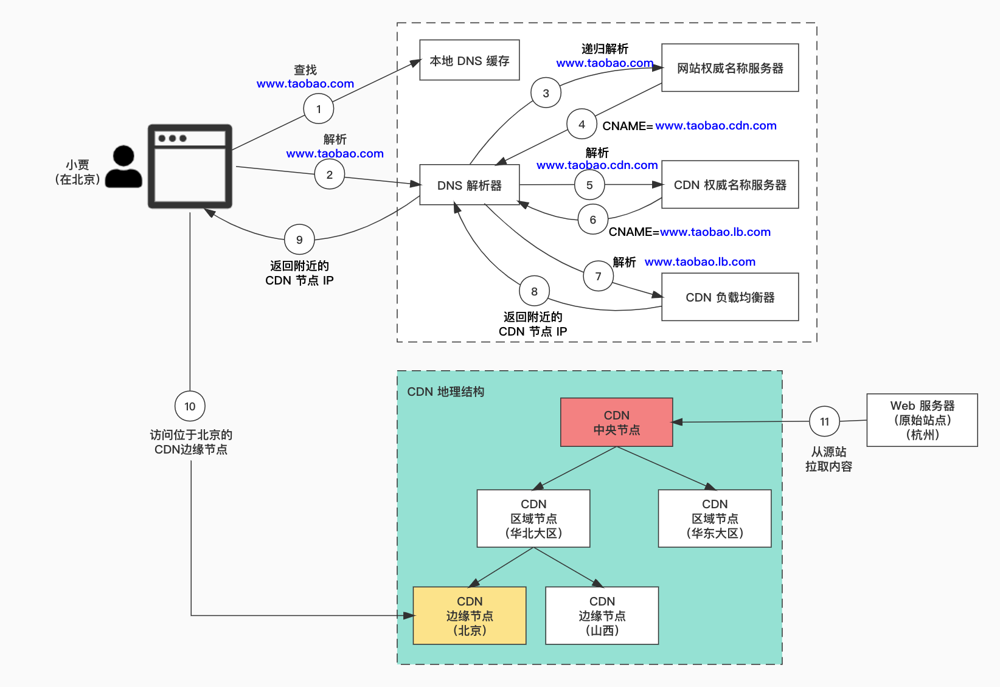

维基百科给 CDN 的定义如下：
内容分发网络（Content Delivery Network 或Content Distribution Network，缩写：CDN）是指一种透过互联网互相连接的电脑网络系统，利用最靠近每位用户的服务器，更快、更可靠地将音乐、图片、视频、应用程序及其他文件发送给用户，来提供高性能、可扩展性及低成本的网络内容传递给用户。
我们用更精简的语句概括一下：CDN 是一种利用分布在各个地理位置的服务器来提供快速内容交付的技术。
- 这里的服务器我们也称为边缘（edge）服务器
- 交付的内容包括静态内容和动态内容
假如住在北京的小贾想要访问一个部署在杭州的电商网站，如果这个请求历经大半个中国进入位于杭州的服务器再返回，响应会非常慢。因此，那个电商网站可以在小贾居住地附近部署 CDN 服务器，网站的内容将从附近的 CDN 服务器加载。
下图说明了这个过程：

- 小贾在浏览器中输入 www.taobao.com ，浏览器在本地 DNS 缓存中查找该域名对应的 IP 地址。
- 如果没有在本地 DNS 缓存中找到该域名，浏览器就会去找 DNS 解析器进行域名解析。DNS 解析器通常位于互联网服务供应商（ISP，如中国联通、中国电信）。
- DNS 解析器通过递归的方式解析域名，最终它会要求权威名称服务器（Authoritative Name Server）查找该域名。
- 如果我们不使用 CDN，权威名称服务器会返回 www.taobao.com 位于杭州的 IP 地址。使用 CDN 后，权威名称服务器会返回一个别名指向 www.taobao.cdn.com （CDN 服务器的域名，这里只是举例，taobao 的 CDN 域名以实际为准）。
- DNS 解析器找到 CDN 权威名称服务器解析 www.taobao.cdn.com 。
- CDN 权威名称服务器再次返回一个别名：CDN 负载均衡器的域名 www.taobao.lb.com 。
- DNS 解析器继续要求 CDN 负载均衡器解析 www.taobao.lb.com ，负载均衡器根据用户的 IP 地址、ISP、请求的内容和服务器负载状况等条件选择一个最佳的 CDN 边缘服务器。
- CDN 负载均衡器返回 CDN 边缘服务器的 IP 地址。
- DNS 解析器将得到的 CDN 边缘服务器 IP 地址返回给浏览器。
- 浏览器访问 CDN 边缘服务器加载网站内容。CDN 服务器上缓存了静态和动态两种类型的内容，前者包含静态页面、图片、视频，后者包含边缘计算的结果。
- 如果 CDN 边缘服务器的缓存中没有找到用户需要的内容，它就将请求发给该地区（如华北大区）的 CDN 服务器。如果仍然没有找到，会将继续请求更上一级的中央 CDN 服务器，以此类推最终有可能会请求到源站，也就是位于杭州的服务器。这就是所谓的 CDN 分布式网络，其中服务器被部署在不同的地理位置。